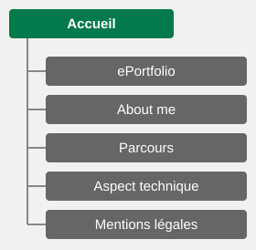
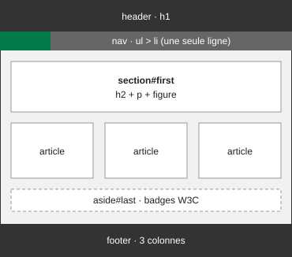
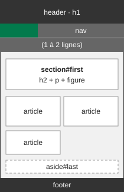
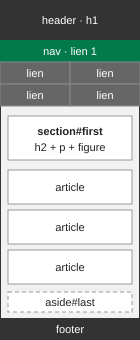
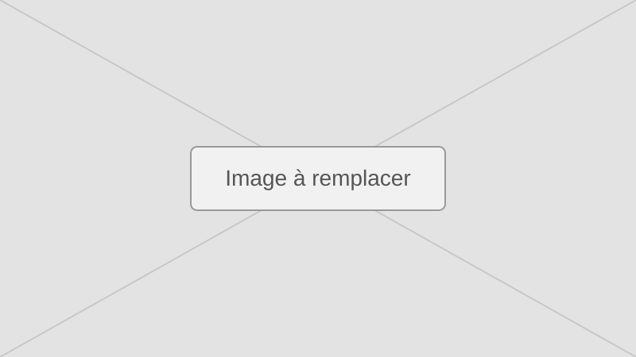

Aspect technique
Cette page rassemble les livrables techniques de la SAÉ14 : comment le site a été conçu, testé et mené à bien.
Plan du site

Le plan du site aide les visiteurs, et les moteurs de recherche, à trouver tout le contenu. Voici la même information en version texte :
Structure filaire
Toutes les pages partagent la même structure, qui s'adapte à la largeur de l'écran : en-tête et menu, contenu, bloc de validation puis pied de page.
-

Ordinateur (plus de 1024 px) -

Tablette (601 à 1024 px) -

Mobile (600 px et moins)
Arborescence physique
Organisation des dossiers et des fichiers du site statique :
racine-du-site/
├── index.html
├── eportfolio.html
├── about-me.html
├── parcours.html
├── aspect-technique.html
├── mentions-legales.html
├── css/
│ ├── style2.css
│ └── responsive.css
├── images/
│ ├── favicon.svg
│ ├── placeholder.svg
│ ├── badge-html5.svg
│ ├── badge-css3.svg
│ ├── plan-du-site.svg
│ ├── filaire-ordinateur.svg
│ ├── filaire-tablette.svg
│ └── filaire-mobile.svg
└── medias/
├── video-centre-interet.mp4
├── audio-presentation.mp3
└── sous-titres.vtt[À compléter : mettre à jour cet arbre si vous ajoutez, renommez ou supprimez des fichiers.]
Architecture des pages et charte graphique
Architecture des pages
| Balise | Rôle dans les pages |
|---|---|
| header | Titre du site (h1) et menu de navigation |
| nav | Menu principal et sommaire de cette page |
| main | Contenu propre à chaque page |
| section | Grande partie thématique, introduite par un titre h2 |
| article | Carte autonome : présentation d'une page ou d'un contenu |
| figure, figcaption | Images, vidéos, tableaux et schémas légendés |
| aside | Bloc complémentaire : badges de validation W3C |
| footer | Droits, mentions légales et plan du site |
Adaptation à la taille de l'écran
| Format | Largeur d'écran | Mise en page |
|---|---|---|
| Très grand écran | plus de 1280 px | Contenu centré sur 1200 px au maximum, cartes sur trois colonnes. |
| Ordinateur | 1025 à 1280 px | Contenu sur 1100 px au maximum, menu sur une ligne, cartes sur trois colonnes, en-tête et pied de page toujours visibles. |
| Tablette | 601 à 1024 px | Menu sur une ou deux lignes, cartes sur deux colonnes. |
| Mobile | 600 px et moins | Menu sur deux colonnes, cartes sur une colonne, en-tête et pied de page qui défilent avec la page. |
Charte graphique
| Élément | Valeur | Aperçu | Utilisation |
|---|---|---|---|
| Gris foncé | #333333 | En-tête et pied de page | |
| Gris moyen | #666666 | Barre de navigation | |
| Vert | #04AA6D | Filets, page en cours, cartes | |
| Vert foncé | #027A4C | Liens, onglet Accueil, boutons | |
| Gris clair | #DDDDDD | Survol des liens du menu | |
| Fond de page | #F1F1F1 | Arrière-plan des pages | |
| Texte | #222222 | Texte courant | |
| Bordures | #BBBBBB | Tableaux, cartes, séparateurs | |
| Police | Arial, Helvetica, sans-serif | Aa | Tout le site |
Illustration du responsive design
[À compléter : indiquez l'outil utilisé pour tester le site (par exemple Responsive Checker, Responsinator ou les outils de développement du navigateur) et remplacez les images ci-dessous par vos captures d'écran.]
-

Mobile ([largeur testée]) -
Tablette ([largeur testée]) -
Ordinateur ([largeur testée])
Performances web
| Indicateur | Résultat | Commentaire |
|---|---|---|
| Note globale | [Note] | [Analyse] |
| Temps de chargement | [Valeur] | [Analyse] |
| Optimisations réalisées | [Liste] | [Effet obtenu] |
Problèmes rencontrés et solutions
| Problème rencontré | Cause | Solution apportée |
|---|---|---|
| [Problème 1] | [Cause] | [Solution] |
| [Problème 2] | [Cause] | [Solution] |
| [Problème 3] | [Cause] | [Solution] |
Gestion de projet
Organisation avec Trello
Diagramme de Gantt final
Bilan global de la SAÉ
Les objectifs ont-ils été atteints ?
[À compléter : comparez le résultat avec le cahier des charges.]
Les moyens étaient-ils adaptés ?
[À compléter : outils, temps, ressources, accompagnement.]
Ce que j'ai bien fait et ce que je ferais mieux
- [À compléter : un point fort]
- [À compléter : un point à améliorer, et comment]